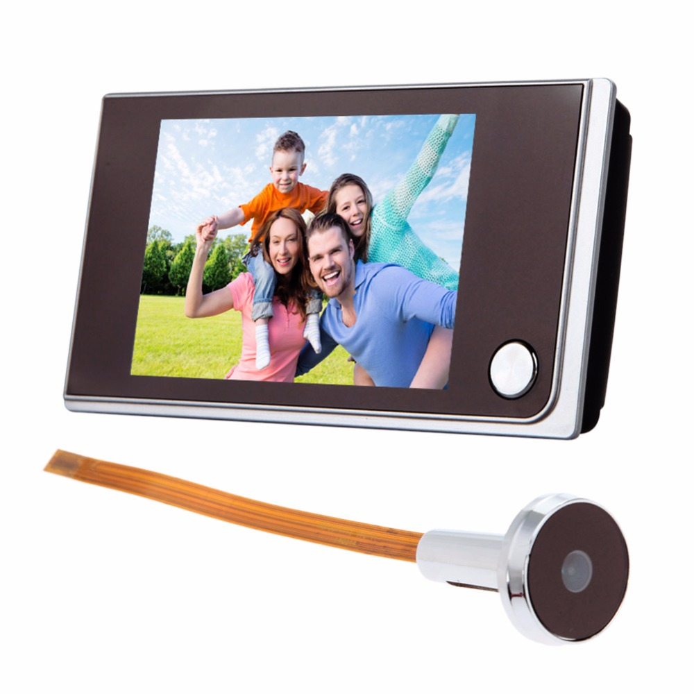
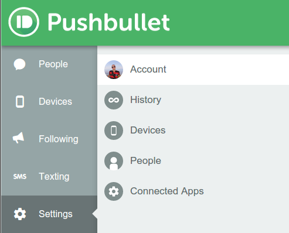
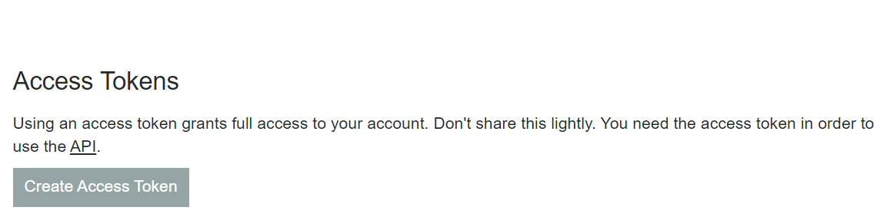

Smart Doorbell
Das Projekt "Smart Doorbell" beinhaltet die Implementierung einer Türklingel mit Video- und Audioaufnahme. Sobald die Türklingel betätigt wird, wird ein Videoanruf gestartet und die Aufnahme von Audio und Video aktiviert. Zusätzlich kann optional eine Push-Notification versendet werden.
| Raspberry Pi 400 |
 |
| LCD Screen/Monitor |
 |
| Kamera |
 |
| Headset/Speaker+Mikrophone |
 |
Konfiguration
Installieren Sie den App PushBullet auf ihrem Smartphone und registrieren Sie sich. Dann holen Sie ihr Account-API. Das finden Sie unter ihre Account einstellungen.

Update & Upgrade
OpenCV(cv2)
pip
install
opencv-python
PushBullet
pip
install
pushbullet.py
USB Kamera
sudo
apt install
fswebcam
Kamera einstellen. Interfacing Options --> Camera. Wählen Sie "ja" und dann "finish"
USB Mikrophone/Headphone
sudo
apt install
alsa-utils
Code/Script
Erstellen Sie ein Datei für den Code (z.B doorbell.py) und geben Sie diesem Code rein oder laden Sie Datei (doorbell.py Herrunterladen.) herrunter.
import time
import os
import subprocess
import cv2
import webbrowser
import pushbullet
import uuid
# Install required libraries
# User Parameters
JITSI_ID = None # Set your custom meeting ID here/None=Random
RING_SFX_PATH = None
ENABLE_PUSH = True
PUSHBULLET_API_KEY = 'PushBullet API' # Type in your own API
# Program
def send_push_notification(chat_url, enable_push):
if enable_push:
pb = pushbullet.Pushbullet(PUSHBULLET_API_KEY)
push = pb.push_link("Visitor Notification", "A visitor is waiting at the doorbell.", chat_url)
print("Push notification sent.")
def ring_doorbell():
SoundEffect(RING_SFX_PATH).play()
chat_id = JITSI_ID if JITSI_ID else str(uuid.uuid4())
video_chat = VideoChat(chat_id)
send_push_notification(video_chat.get_chat_url(), ENABLE_PUSH)
webbrowser.get().open(video_chat.get_chat_url())
video_chat.start()
class SoundEffect:
def __init__(self, filepath):
self.filepath = filepath
def play(self):
if self.filepath:
subprocess.Popen(["aplay", self.filepath])
class VideoChat:
def __init__(self, chat_id):
self.chat_id = chat_id
self.camera = None
def get_chat_url(self):
return "https://meet.jit.si/%s" % self.chat_id
def start(self):
if not self.camera and self.chat_id:
self.camera = cv2.VideoCapture(0) # Use appropriate camera index if multiple cameras are connected
self.camera.set(cv2.CAP_PROP_FRAME_WIDTH, 640)
self.camera.set(cv2.CAP_PROP_FRAME_HEIGHT, 480)
self.camera.set(cv2.CAP_PROP_FPS, 30)
time.sleep(2) # Allow camera to warm up
else:
print("Can't start video chat -- already started or missing chat id")
def end(self):
if self.camera:
self.camera.release()
self.camera = None
def setup():
print("Starting Doorbell...")
ring_doorbell()
def cleanup():
pass
if __name__ == '__main__':
setup()
try:
while True:
time.sleep(0.1)
except KeyboardInterrupt:
pass
finally:
cleanup()